Introduction
This vignette will show you how to load 10X single cell RNA seq data into R and to perform “vanilla” processing. Here is an overview of the steps we will cover:
- Pre-processing data using 10X genomics cloud.
- Loading data into a list of cellDataSet objects.
- QC Functions
- Merging into a single cellDataSet object.
- Dimension reduction
- Batch correction
- Clustering
- Gene modules
- Label transfer using Seurat
- Cell assignments
- UMAP Plot Types
- Gene Dotplots
- Differential Gene Expression
I use these steps on almost every scRNA-seq analysis I perform. With proper configuration, steps 1-9 can be run non-interactively. I usually will make a “dry run” interactively as I build the processing script. Then I will refresh the R session and source the script to run from beginning to end.
The last steps require some interactive input and may be customized depending on the analysis you are doing. These usually become small standalone scripts.
An important note about data management
An important fact to note is that the way we run these algorithms (UMAP dimension reduction and clustering in particular), the results are subtly non-deterministic. By this I mean that there will be subtle, arbitrary changes in the way the clusters are defined or the exact dimensions assigned to particular cells. This does not change the underlying expression data or affect the analysis negatively except that if you were to run the same script twice, cluster 5 may become cluster 6 and UMAP dimensions may look different. The bottom line is that it is important to know which steps are deterministic and which are not. Also, which steps are computationally intensive and which are not.
In order to deal with these issues, there are particular data objects which you will want to save as .rda files and then go back to if needed in the future. Usually this will be the final cellDataSet object and some qc files. Using these things you can quickly and reproducibly generate a large number of plots. I will point out the points where you want to save these objects in this vignette.
A further note is that I am in the practice of packaging all of the pre-computed data objects into formal R packages. This aids portability, prevents unintentional overwriting, lost data, manages versions…basically a lot of good things for rigorous reproducible science. However, building R packages is outside the scope of this vignette. I may create a vignette on this in the future, but in the mean time here is a very good source: https://kbroman.org/pkg_primer/ This is where I learned 90% of how to build an R package.
Good luck!!
Pre-processing data using 10X genomics cloud
As of 2021/2022, the preferred method of going from sequence data (FASTQs) to cell-barcode matrices is using the 10X genomics cloud: https://www.10xgenomics.com/products/cloud-analysis. The benefits over running this locally are too numerous to list. The only drawbacks are that it requires some time to upload your data and you have to do some point and click to get things configured. So anyways, if you are working with FASTQs, this is what you should do.
Using 10X genomics cloud is free for the most part. It only restricts the number of downloads you can perform for a given dataset. It does require some very basic familiarity with the unix/linux command-line interface, but it does provide premade commands for you to copy and paste into the terminal.
The 10X Cloud outputs a set of files I refer to as a “pipestance”. This is an archaic term dating from the time when we had to run the analysis on our local machine. You will want to download the whole set of files into their own directory with one subdirectory for each biological sample. Including BAM files and dimensionality reduction in the 10X Cloud analysis is optional and I recommend against it in most cases. Unless you are doing things like RNA velocity or spliceoform analysis you don’t need the BAMs and they are very large. We will be doing our own dimensionality reduction and clustering so we don’t need those files either. Once you have downloaded the files you should not edit, move or rename them.
The recommended approach is to download the pipestance directly to high-capacity storage, usually on an institutional network drive. That way you don’t have to worry about backup or size. Once the data is archived there you will read from it very few times so data transfer time is not really an issue. Most of your downstream work will be with compressed R objects which are small and portable. I usually keep the FASTQs and the pipestances for each project together. You’ll want to make it very clear using either README files or with the file structure itself, which FASTQs generated which pipestances. It isn’t scripted (the drawback I mentioned above) so if you want to know what you did a year from now, you have to find a way to make it completely obvious to yourself.
Loading data into a list of cellDataSet objects
The first thing you have to do is load the 10X Data for each specimen into a list of cellDataSet objects. You will use a configuration file to do this. First some more detail on these topics:
-
10X Data: The most important file is a zipped tar file containing the cell barcodes, genes, and gene/barcode matrix. Depending on the specific analysis pipeline run, it may be named “filtered_feature_bc_matrix.tar.gz”, or “sample_feature_bc_matrix.tar.gz”. The difference depends whether you are running the “counts” pipeline or the “multi” pipeline. You don’t want the raw_feature_bc_matrix which contains droplets below the UMI cutoff (basically empty droplets) and un-de-multiplexed data if you are using multiplexing.
The other things you will most likely want but we won’t cover in detail here are the metrics summary file and any VDJ sequencing if you are doing that. It is easier just to look at the html metrics summary file but if you want to programmatically look at the sequencing metrics file in R you can read that in. VDJ may be covered in another vignette.
cellDataSet: Abbreviated CDS, this is the main data structure for holding the single cell data. It is derived from the Bioconductor SingleCellExperiment class. It can be thought of as a database holding a table of cell metadata, a table of gene metadata, and matrix of expression data, all of which are built from the pipestance data you load in. There are additional “slots” available in the CDS class for reduced dimensions of various types and cluster assignments. These we don’t interact with directly for the most part. I find the data structure very simple and straightforward to understand and work with. All of the scRNA-seq functions in this package operate on this data structure. I find the Seurat data structure less user-friendly. Where we need to use Seurat-only functions (like label transfer and Doubletfinder), Seurat objects are generated “behind the scenes”, so you don’t really need to know them well to use the blaseRtools functions. If you understood this paragraph then you already understand the CDS data structure which is half the battle.
configuration file: Abbreviated config, this is a text file (csv) that you can edit in excel and which will hold sample-level metadata, including the file path where the pipestance is stored. You can see an example I used for this vignette here:
system.file("extdata/vignette_config.csv", package = "blaseRdata"). At a minimum it should have a column named “sample” and a column named “targz_path” (the name for the latter is not critical).sample: It is natural for most people to refer to the biological specimen that produced the data as a “sample”. However this term gets rather overloaded in these analyses, meaning that it gets used for too many things in too many different places. If you want to be safer, you can call it “specimen” or something else. If you want to use “sample” as I do here, you have to make sure it is not added explicitly as a cell metadata column. If you do it will cause an error with a function that will try to create a “sample” column automatically. Hopefully that will be more clear below.
One final note: since some of the data processing are time-consuming,
most of the code listed here will not be executed with the vignette. You
can copy the code blocks, modify and use them on your own if you want. I
have included a final CDS object which you can access with
blaseRdata::vignette_cds. You can use this to make the
plots and do differential gene expression if you like.
Getting started then:
# Attach the packages you will need for the analysis.
library(blaseRtools)
library(blaseRdata)
library(monocle3)
library(Seurat)
library(tidyverse)
library(cowplot)
library(conflicted)
conflict_prefer("filter", "dplyr")
theme_set(theme_cowplot(font_size = 12))Read in the analysis configuration file. Here I am reading it from the blaseRdata package but you would substitute your own file path.
# Read in and inspect the configuration file.
vignette_config <- read_csv(system.file("extdata/vignette_config.csv",
package = "blaseRdata"),
col_type = list(.default = col_character()))
vignette_config
#> # A tibble: 2 × 4
#> sample date equipment targz_path
#> <chr> <chr> <chr> <chr>
#> 1 chromium_controller 20211226 chromium "X:\\Labs\\Blaser\\single_cell\\vignet…
#> 2 chromium_X 20211226 X "X:\\Labs\\Blaser\\single_cell\\vignet…The data we are using here is a very small sample dataset provided by 10X. It includes 2 PBMC samples run on different 10X machines: the standard Chromium machine and the new Chromium X.
You’ll notice that I added a couple of sample metadata features in addition to the required information. We will add those to the cds. Also notice the format of the file path. This is linux reading a windows file path. In the config file, I used the windows “copy path” feature and simply pasted it into the csv. The double backslashes stand in for the single backslash which is basically toxic to anything running on linux. So this is not a problem. However, the X: stands for our network drive where the data are located. Linux doesn’t know how to access that. So I have a helper function that will translate it for you. This only works with the OSUMC X drive. If you are using another drive you will have to translate that to a linux-compatible file path manually. Here is how you use that function.
# Fix the windows-style file path.
vignette_config <- vignette_config %>%
mutate(targz_path = bb_fix_file_path(targz_path))
vignette_config
#> # A tibble: 2 × 4
#> sample date equipment targz_path
#> <chr> <chr> <chr> <chr>
#> 1 chromium_controller 20211226 chromium ~/network/X/Labs/Blaser/single_cell/vi…
#> 2 chromium_X 20211226 X ~/network/X/Labs/Blaser/single_cell/vi…This uses the pipe notation and tidyverse functions, which you should become familiar with if you aren’t already.
Now we are ready to read in the data using the bb_load_tenx_targz function. We will use the “apply” functional programming paradigm and the purrr package to map this function across each sample in the config file. This will produce a list of cds objects for us.
# Generate a list of CDS objects using purrr::map
cds_list <- map(
.x = vignette_config$sample,
.f = function(x, conf = vignette_config) {
conf_filtered <- conf %>%
dplyr::filter(sample == x)
cds <- bb_load_tenx_targz(targz_file = conf_filtered$targz_path,
sample_metadata_tbl = conf_filtered %>%
select(-c(sample, targz_path))
)
return(cds)
}
) %>%
set_names(nm = vignette_config$sample)Note that the line select(-c(sample, targz_path))
removes the sample column and the file path from the sample metadata. We
don’t need the file path. As mentioned above, having “sample” in the
cell metadata will cause an error later. We use
set_names(nm = vignette_config$sample) to name the CDS
object with the sample name. That will get added into the cell metadata
later.
QC Functions
Next we want to remove low quality cells from the analysis. First we identify low quality cells based on a high percentage of reads mapped to mitochondrial genes or a low number of genes detected. We will map the function bb_qc to each element of cds_list. bb_qc itself returns a list of data objects, so we will get a list of lists. The qc calls will be returned to the CDS objects later, but the whole output of this step is worth saving for future reference.
# generate a list of qc results for individual CDS objects
vig_qc_res <- pmap(.l = list(cds = cds_list,
cds_name = names(cds_list),
genome = rep("human", times = length(cds_list))),
.f = bb_qc
) %>%
set_names(nm = names(cds_list))For example:
vig_qc_res$chromium_controller[3]
vig_qc_res$chromium_controller[4]Next we want to remove potential cell doublets. We identify these using a function from the Doubletfinder package. This generates “pseudodoublets” and marks any real cells that map in the same area as the pseudodoublets.
First we have to figure out the anticipated doublet rate which is estimated by the number of cells in the cds/100000.
We also have to supply the qc results so we only run the prediction on high-quality cells.
# gets the number of cells in each cds and divides it by 100000
anticipated_doublet_rate <- unlist(map(cds_list, ncol))/100000
# extracts the first element of the qc result list for each cds
qc_calls <- map(vig_qc_res,1)
# generates a list of tables with doubletfinder results
doubletfinder_list <-
pmap(
.l = list(
cds = cds_list,
doublet_prediction = anticipated_doublet_rate,
qc_table = qc_calls
),
.f = bb_doubletfinder
) %>%
set_names(names(cds_list))Now join the qc data and the doubletfinder data back onto cds_list
Merging into a single cellDataSet object.
# Merge the CDS list into a single CDS
vignette_cds <- monocle3::combine_cds(cds_list = cds_list)We can now remove some genes that are not going to be helpful. Since we have already used the mitochondrial genes to identify poor-quality cells, and since we are not interested in looking at them specifically we can remove them. Likewise we can typically remove any ribosomal RNA genes. Pre-calculated lists of genes to remove for human, mouse, and zebrafish are provided in the blaseRdata package.
# Remove mitochondrial and ribosomal genes.
vignette_cds <-
vignette_cds[rowData(vignette_cds)$gene_short_name %notin% hg38_remove_genes,]Now we can remove the low quality cells and cell doublets. The doubletfinder function provides doublet calls at two confidence levels. If you like you can previzualize and select which ones you want to remove. I ususally just remove the high confidence doublets.
# Remove the low-quality cells
vignette_cds <- vignette_cds[,colData(vignette_cds)$qc.any == FALSE]
# Remove the high-confidence doublets
vignette_cds <-
vignette_cds[,colData(vignette_cds)$doubletfinder_high_conf == "Singlet"]
# Now remove the qc and doubletfinder columns from the cell metadata because we are done with them.
colData(vignette_cds)$qc.any <- NULL
colData(vignette_cds)$doubletfinder_low_conf <- NULL
colData(vignette_cds)$doubletfinder_high_conf <- NULLDimension reduction
Now we are ready to perform the dimensionality reduction. This is done in two steps and we use unmodified monocle functions. First, we calculate PCA components for each cell to reduce the number of dimensions from the number of genes (thousands) to something like 50. Monocle provides an option to set the number of PCAs you want to calculate. Some people like exploring different PCAs and picking exactly how many you want to calculate. I don’t find this to be a particularly useful exercise so I usually just run it with the default setting which is 50. The additional variance explained with PCAs 51 and greater is tiny.
# Calculate the PCA dimensions
vignette_cds <- preprocess_cds(vignette_cds)Now we can run the UMAP algorithm to reduce the dimensions down to 2. There are several options available here. You should set the number of cores the algorithm will use.
# Calculate UMAP dimensions
vignette_cds <- reduce_dimension(vignette_cds, cores = 40)Running UMAP with multiple cores will generate slightly different
results each time you run it, so you want to get to this point and then
save your data object with
save(vignette_cds, file = "<directory>/vignette_cds.rda", compress = "gzip").
At this point it is worth exploring the cell and gene metadata to
understand how things are arranged. We can use the bb_cellmeta and
bb_rowmeta convenience functions to return the metadata in the form of a
tibble. This is more convenient for exploring and manipulating, but if
you want to modify or add back to the CDS object, you should use the
form colData(CDS)$new_column <- data
# Cell metadata
bb_cellmeta(vignette_cds)
#> # A tibble: 1,160 × 16
#> cell_id barcode Size_Factor date equipment sample prealignment_dim1
#> <chr> <chr> <dbl> <chr> <chr> <chr> <dbl>
#> 1 AATCACGAGGATCAC… AATCAC… 3.20 2021… chromium chrom… 9.42
#> 2 AATCACGAGTGGCCT… AATCAC… 0.990 2021… chromium chrom… -7.10
#> 3 AATCACGCACAGAGA… AATCAC… 0.751 2021… chromium chrom… -4.14
#> 4 AATCACGCACCAGCG… AATCAC… 3.08 2021… chromium chrom… 6.97
#> 5 AATCACGCAGGTTCA… AATCAC… 0.627 2021… chromium chrom… -4.12
#> 6 AATCACGCATATCTG… AATCAC… 0.830 2021… chromium chrom… -3.56
#> 7 AATCACGGTCAAGCG… AATCAC… 0.931 2021… chromium chrom… -4.04
#> 8 AATCACGGTTGGACC… AATCAC… 0.596 2021… chromium chrom… -7.70
#> 9 AATCACGTCCCGTTG… AATCAC… 1.16 2021… chromium chrom… -3.28
#> 10 AATCACGTCGTTCCT… AATCAC… 0.746 2021… chromium chrom… -5.68
#> # ℹ 1,150 more rows
#> # ℹ 9 more variables: prealignment_dim2 <dbl>, leiden <fct>, partition <fct>,
#> # louvain <fct>, seurat_dim1 <dbl>, seurat_dim2 <dbl>,
#> # seurat_celltype_l1 <chr>, seurat_celltype_l2 <chr>, leiden_assignment <fct>
# Gene metadata
bb_rowmeta(vignette_cds)
#> # A tibble: 36,398 × 8
#> feature_id id gene_short_name data_type module module_labeled supermodule
#> <chr> <chr> <chr> <chr> <fct> <fct> <fct>
#> 1 ENSG000002… ENSG… MIR1302-2HG Gene Exp… NA No Module NA
#> 2 ENSG000002… ENSG… FAM138A Gene Exp… NA No Module NA
#> 3 ENSG000001… ENSG… OR4F5 Gene Exp… NA No Module NA
#> 4 ENSG000002… ENSG… AL627309.1 Gene Exp… NA No Module NA
#> 5 ENSG000002… ENSG… AL627309.3 Gene Exp… NA No Module NA
#> 6 ENSG000002… ENSG… AL627309.2 Gene Exp… NA No Module NA
#> 7 ENSG000002… ENSG… AL627309.5 Gene Exp… 1 Module 1 1
#> 8 ENSG000002… ENSG… AL627309.4 Gene Exp… NA No Module NA
#> 9 ENSG000002… ENSG… AP006222.2 Gene Exp… NA No Module NA
#> 10 ENSG000002… ENSG… AL732372.1 Gene Exp… NA No Module NA
#> # ℹ 36,388 more rows
#> # ℹ 1 more variable: supermodule_labeled <fct>Note that the sample names have been added into the cell metadata.
At this point you want to visualize your cells and determine if you need to perform any batch-correction techniques.
Batch correction
The data from these samples is very similar but let’s say there was some batch effect you wanted to reduce between these two samples. You can align any number of samples by selecting a cell metadata column to align by. This will reduce the variability in UMAP dimension based on that column. If you want to align by more than one column, you should create a composite variable of all columns you want to align by, say by date and facility.
The important thing to remember here is that alignment/batch correction does not change the underlying expression data. It only changes the PCAs and UMAP calculations. So if you also want to account for these variables when doing differential gene expression, then you need to model that in your calculations (see below). So why do batch correction? It helps reduce the heterogeneity of your dataset so you can put similar cells together in clusters. This is an important concept for finding differences between samples.
The function bb_align performs these steps: calculate aligned PCA dimensions, recalculate umap dimensions, add the pre-alignment dimensions into the cell metadata in case you want to use them again.
Usually I will save this to a temporary object until I find a useful alignment formula. Then we can save as the original CDS and discard the temporary object once we are satisfied.
# Align samples according to the equipment metadata column
vignette_cds_aligned_temp <- bb_align(vignette_cds, align_by = "sample")
# Replace the original CDS with the Aligned CDS
vignette_cds <- vignette_cds_aligned_temp
rm(vignette_cds_aligned_temp)
bb_var_umap(vignette_cds, var = "sample")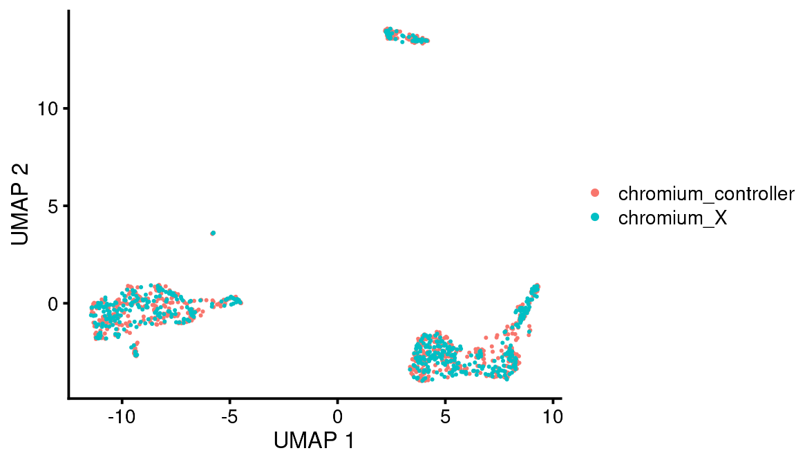
You can see that the pre-alignment dimensions are stored in the cell metadata so you can plot them later if you want.
bb_cellmeta(vignette_cds)
#> # A tibble: 1,160 × 16
#> cell_id barcode Size_Factor date equipment sample prealignment_dim1
#> <chr> <chr> <dbl> <chr> <chr> <chr> <dbl>
#> 1 AATCACGAGGATCAC… AATCAC… 3.20 2021… chromium chrom… 9.42
#> 2 AATCACGAGTGGCCT… AATCAC… 0.990 2021… chromium chrom… -7.10
#> 3 AATCACGCACAGAGA… AATCAC… 0.751 2021… chromium chrom… -4.14
#> 4 AATCACGCACCAGCG… AATCAC… 3.08 2021… chromium chrom… 6.97
#> 5 AATCACGCAGGTTCA… AATCAC… 0.627 2021… chromium chrom… -4.12
#> 6 AATCACGCATATCTG… AATCAC… 0.830 2021… chromium chrom… -3.56
#> 7 AATCACGGTCAAGCG… AATCAC… 0.931 2021… chromium chrom… -4.04
#> 8 AATCACGGTTGGACC… AATCAC… 0.596 2021… chromium chrom… -7.70
#> 9 AATCACGTCCCGTTG… AATCAC… 1.16 2021… chromium chrom… -3.28
#> 10 AATCACGTCGTTCCT… AATCAC… 0.746 2021… chromium chrom… -5.68
#> # ℹ 1,150 more rows
#> # ℹ 9 more variables: prealignment_dim2 <dbl>, leiden <fct>, partition <fct>,
#> # louvain <fct>, seurat_dim1 <dbl>, seurat_dim2 <dbl>,
#> # seurat_celltype_l1 <chr>, seurat_celltype_l2 <chr>, leiden_assignment <fct>
bb_var_umap(vignette_cds, var = "sample",
alt_dim_x = "prealignment_dim1",
alt_dim_y = "prealignment_dim2")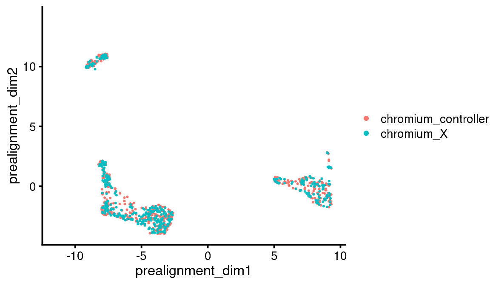
Clustering
There are three clustering methods we use. Louvain (ref: PMID 30914743) are the finest/smallest, Leiden (ref: PMID 30914743) are medium, and Partitions (ref: PMID 30890159) are the largest/coarsest. We have a function to calculate all three using default parameters and add them explicitly into the CDS cell metadata. In addition, this function will calculate the top markers for each and produce a csv file which you can look at externally or read back into R as I do here. Usually you want to read it back into R so when you identify what the clusters are, you can label them in the table.
Using this function requires using default clustering parameters in the underlying monocle functions. If you want to modify those (usually not necessary) you need to use the original monocle functions.
# Identify clusters and calculate top markers
marker_file <- tempfile()
vignette_cds <- bb_triplecluster(vignette_cds, n_top_markers = 50, outfile = marker_file, n_cores = 8)
vignette_top_markers <- read_csv(marker_file)
vignette_top_markers
#> # A tibble: 1,100 × 11
#> gene_id gene_short_name cluster_method cell_group marker_score
#> <chr> <chr> <chr> <chr> <dbl>
#> 1 ENSG00000265972 TXNIP partition partition 1 0.998
#> 2 ENSG00000081237 PTPRC partition partition 1 0.997
#> 3 ENSG00000163041 H3F3A partition partition 1 0.997
#> 4 ENSG00000034510 TMSB10 partition partition 1 1
#> 5 ENSG00000114942 EEF1B2 partition partition 1 0.991
#> 6 ENSG00000187514 PTMA partition partition 1 1
#> 7 ENSG00000232112 TMA7 partition partition 1 0.984
#> 8 ENSG00000269028 MTRNR2L12 partition partition 1 0.998
#> 9 ENSG00000145741 BTF3 partition partition 1 0.985
#> 10 ENSG00000127184 COX7C partition partition 1 0.991
#> # ℹ 1,090 more rows
#> # ℹ 6 more variables: mean_expression <dbl>, fraction_expressing <dbl>,
#> # specificity <dbl>, pseudo_R2 <dbl>, marker_test_p_value <dbl>,
#> # marker_test_q_value <dbl>Now you can plot the cells and color by cluster type
bb_var_umap(vignette_cds, var = "partition")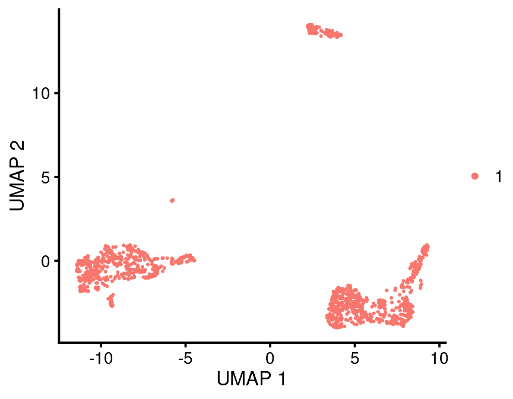
bb_var_umap(vignette_cds, var = "leiden")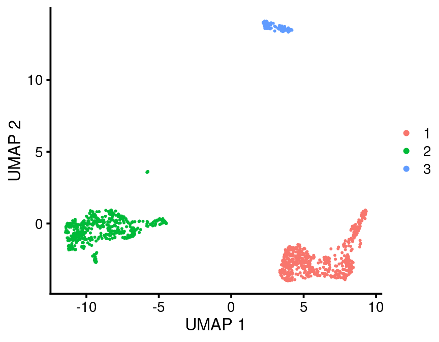
bb_var_umap(vignette_cds, var = "louvain")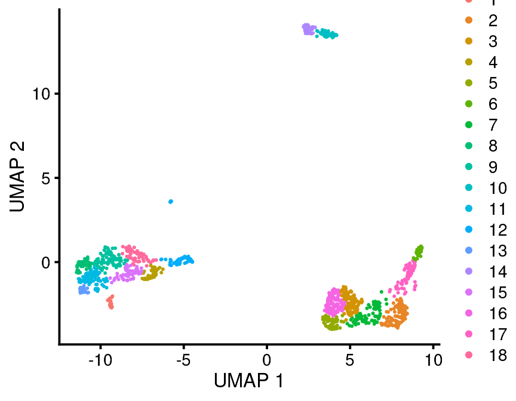
Gene modules
Gene modules are groups of genes that are similarly co-regulated from cell to cell in the data set. We use monocle functions to identify gene modules and store them as gene metadata.
Gene modules in this sense can only be defined using single cell data. Essentially the algorithm reverses the UMAP calculation and plots “coordinates” for each gene according to the cell it is expressed in. Then it clusters the genes according to the UMAP coordinates just like we did for the cells. These are modules and super modules.
Gene modules can have dozens or thousands of genes depending on your dataset. If they are evenly expressed across all cells (like housekeeping genes), some genes may not end up in a module.
Note: this is a computationally-intensive operation which may overload your computer if you use too many cores. It is also non-deterministic so you need to save the CDS object when you are done.
# Identify gene modules and add them to the gene metadata.
vignette_cds <- bb_gene_modules(vignette_cds, n_cores = 24)
bb_rowmeta(vignette_cds)
#> # A tibble: 36,398 × 8
#> feature_id id gene_short_name data_type module module_labeled supermodule
#> <chr> <chr> <chr> <chr> <fct> <fct> <fct>
#> 1 ENSG000002… ENSG… MIR1302-2HG Gene Exp… NA No Module NA
#> 2 ENSG000002… ENSG… FAM138A Gene Exp… NA No Module NA
#> 3 ENSG000001… ENSG… OR4F5 Gene Exp… NA No Module NA
#> 4 ENSG000002… ENSG… AL627309.1 Gene Exp… NA No Module NA
#> 5 ENSG000002… ENSG… AL627309.3 Gene Exp… NA No Module NA
#> 6 ENSG000002… ENSG… AL627309.2 Gene Exp… NA No Module NA
#> 7 ENSG000002… ENSG… AL627309.5 Gene Exp… 1 Module 1 1
#> 8 ENSG000002… ENSG… AL627309.4 Gene Exp… NA No Module NA
#> 9 ENSG000002… ENSG… AP006222.2 Gene Exp… NA No Module NA
#> 10 ENSG000002… ENSG… AL732372.1 Gene Exp… NA No Module NA
#> # ℹ 36,388 more rows
#> # ℹ 1 more variable: supermodule_labeled <fct>Label transfer using Seurat
This is an optional step you can use to generate automatic cell labels. You need to take these results with a grain of salt and always explore the automated cell labels before believing them.
For example if you are looking at leukemia cells and you generate cell labels based on a normal PBMC dataset, you will provide normal celltype labels to leukemia cells which is misleading.
Another issue is that there are many programs that claim to be able to do this but only Seurat seems to be useful in my opinion. However the Seurat people have put most of their effort in this area into developing web apps which have significant limitations for us. Their raw reference data is difficult to find and implement and is only available for human PBMC. For now, we can only use this technique for human PBMC.
If you want to use this, you need to download this file: https://atlas.fredhutch.org/data/nygc/multimodal/pbmc_multimodal.h5seurat. It is about 2GB so we don’t even distribute it with blaseRdata. You need to download that and put it somewhere on your system where you are running the analysis. Then run this, substituting in the appropriate file path:
# Annotate the PBMC data
vignette_cds <- bb_seurat_anno(vignette_cds, reference = "~/workspace_pipelines/sc_refdata/seurat_pbmc_reference_20210506/pbmc_multimodal.h5seurat")This function has added two celltype assignments to the cell metadata. It has also added suerat umap dims. These are where the cells would’ve landed if they were processed in the reference dataset.
bb_cellmeta(vignette_cds)
#> # A tibble: 1,160 × 16
#> cell_id barcode Size_Factor date equipment sample prealignment_dim1
#> <chr> <chr> <dbl> <chr> <chr> <chr> <dbl>
#> 1 AATCACGAGGATCAC… AATCAC… 3.20 2021… chromium chrom… 9.42
#> 2 AATCACGAGTGGCCT… AATCAC… 0.990 2021… chromium chrom… -7.10
#> 3 AATCACGCACAGAGA… AATCAC… 0.751 2021… chromium chrom… -4.14
#> 4 AATCACGCACCAGCG… AATCAC… 3.08 2021… chromium chrom… 6.97
#> 5 AATCACGCAGGTTCA… AATCAC… 0.627 2021… chromium chrom… -4.12
#> 6 AATCACGCATATCTG… AATCAC… 0.830 2021… chromium chrom… -3.56
#> 7 AATCACGGTCAAGCG… AATCAC… 0.931 2021… chromium chrom… -4.04
#> 8 AATCACGGTTGGACC… AATCAC… 0.596 2021… chromium chrom… -7.70
#> 9 AATCACGTCCCGTTG… AATCAC… 1.16 2021… chromium chrom… -3.28
#> 10 AATCACGTCGTTCCT… AATCAC… 0.746 2021… chromium chrom… -5.68
#> # ℹ 1,150 more rows
#> # ℹ 9 more variables: prealignment_dim2 <dbl>, leiden <fct>, partition <fct>,
#> # louvain <fct>, seurat_dim1 <dbl>, seurat_dim2 <dbl>,
#> # seurat_celltype_l1 <chr>, seurat_celltype_l2 <chr>, leiden_assignment <fct>You can plot the cells using the Seurat coordinates:
bb_var_umap(vignette_cds,
var = "seurat_celltype_l1",
alt_dim_x = "seurat_dim1",
alt_dim_y = "seurat_dim2",
overwrite_labels = TRUE,
group_label_size = 4)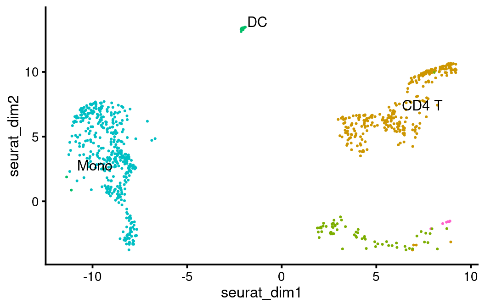
Or you can plot them using their own dimension reduction coordinates. I think this method is better because it reflects the data more accurately.
bb_var_umap(vignette_cds, var = "seurat_celltype_l1")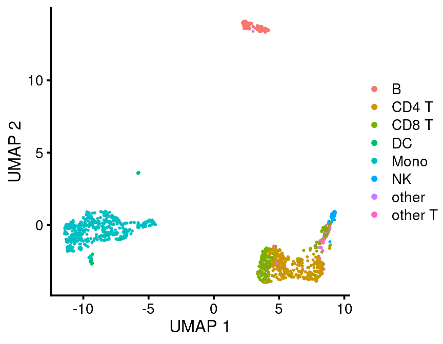
Cell Assignments
This completes the basic loading and processing of single cell data in terms of what can be scripted and run non-interactively. Usually what I will do is build up a script of all of the preceeding commands and then refresh the R session and source the whole script again. Even if it takes hours to run again (doubletfinder, seurat annotations and gene modules are computationally intensive), it is easy enough to let it run overnight and then you can be confident that your output (the final CDS) is really derived from the data and code you have in the script.
Once this is done, I make new scripts for other analysis steps, such as Cell Assignments. Making cell assignments is scientifically challenging but computationally very easy, so you want to put some thought into it. I usually resave the CDS object with cell assignemnts when I am done but these can be edited or new cell assignments can be made very easily if you need to do so.
Usually you want to pick a cluster resolution that is going to be useful and give all of the cells in that cluster the same name.
bb_var_umap(vignette_cds, var = "leiden", plot_title = "Leiden Clusters")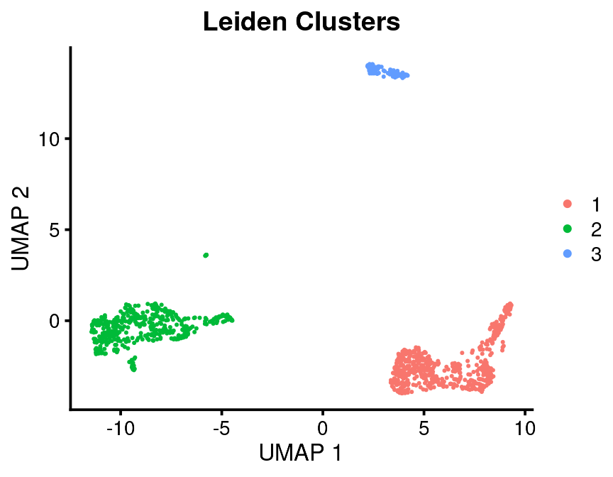
This is a low-throughput dataset with relatively low resolution, but it illustrates the method.
There are a few resources you have available to make cell assignments: 1. Cluster top markers. 2. Gene modules 3. Seurat assignments. We already defined all of these. Gene modules are very powerful for finding out what clusters are but it takes a few more steps to extract those data which I will show later. Let’s say in this case we’ve inspected the cluster top markers and we need some help from the Seurat assignments. As I said previously, I never use the Seurat assignments as is. You can explore them visually as above or you can do something more quantitative.
leiden_seurat <- bb_cellmeta(vignette_cds) %>%
group_by(leiden, seurat_celltype_l1) %>%
summarise(n = n())
leiden_seurat
#> # A tibble: 9 × 3
#> # Groups: leiden [3]
#> leiden seurat_celltype_l1 n
#> <fct> <chr> <int>
#> 1 1 CD4 T 307
#> 2 1 CD8 T 207
#> 3 1 NK 48
#> 4 1 other 1
#> 5 1 other T 26
#> 6 2 DC 33
#> 7 2 Mono 429
#> 8 3 B 108
#> 9 3 other 1That may be enough to tell you that Leiden cluster 1 is T/NK, Cluster 2 is Mono/DC and Cluster 3 is B cells.
If you have a complicated dataset you can use the more detailed seurat_celltype_l2 assignments and/or you can plot it like this:
ggplot(leiden_seurat,
mapping = aes(x = leiden,
y = n,
fill = seurat_celltype_l1)) +
geom_bar(position="fill", stat="identity") +
scale_fill_brewer(palette = "Set1")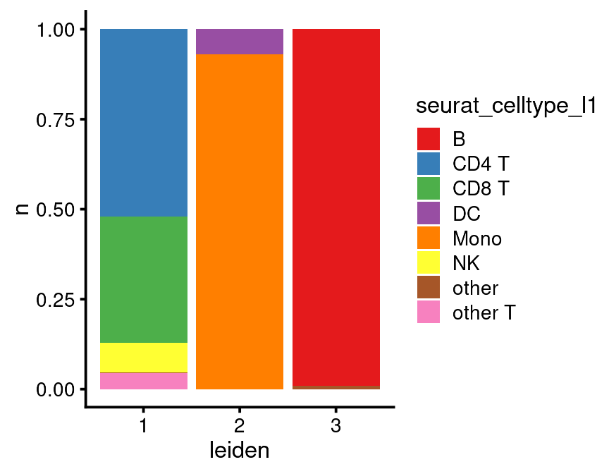
Then we add a new cell metadata column by recoding the leiden column into our designated assignments:
# Recode the leiden clusters with our cell assignments
colData(vignette_cds)$leiden_assignment <- recode(colData(vignette_cds)$leiden,
"1" = "T/NK",
"2" = "DC/Mono",
"3" = "B")
bb_var_umap(vignette_cds, var = "leiden_assignment")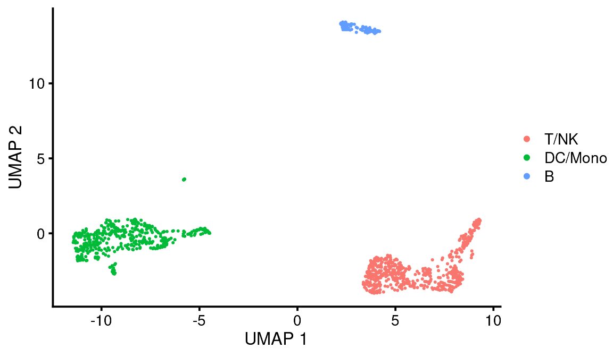
UMAP Plot Types
We’ve already used the main umap plotting function, bb_var_umap. This allows you to color the cells by any cell metadata variable you choose. You set the variable name as the “var” argument. You can also highlight a specific value.
bb_var_umap(vignette_cds,
var = "leiden_assignment",
value_to_highlight = "T/NK",
cell_size = 2,
foreground_alpha = 0.4)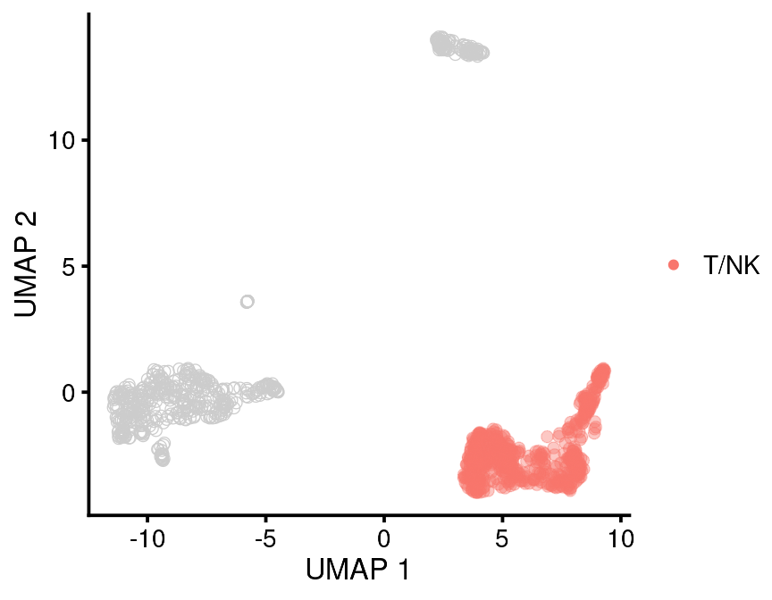
This function returns a ggplot so if you don’t like the colors you just have to add on a different scale. Color palettes can also be set internally in the function.
bb_var_umap(vignette_cds,
var = "leiden_assignment",
value_to_highlight = "T/NK",
palette = "green4",
cell_size = 2,
foreground_alpha = 0.4)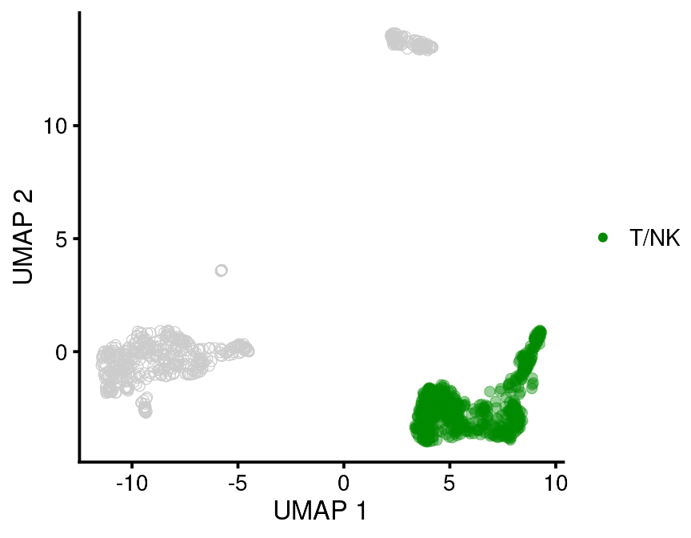
An important concept for the overall analysis is understanding the distribution of cell states between experimental conditions. We use a density function to calculate the local density of cells in UMAP space after faceting the plot by our experimental variable.
bb_var_umap(vignette_cds,
var = "density",
facet_by = "equipment",
cell_size = 2,
plot_title = "Local Cell Density")As you can see, these are basically the same, which is what you would expect.
Density is by definition normalized to the number of cells in the local area. This can produce some over-normalization which may not be useful. In this case you can map the color to the number of cells in local bins. This may also work better with log normalization which you can do. You would also want to use this with the option to downsample to the same number of overall cells so your plot isn’t biased by the number of cells recovered.
bb_var_umap(vignette_cds,
var = "local_n",
nbin = 10, sample_equally = T,
facet_by = "equipment",
cell_size = 2,
plot_title = "Local N in 10 Bins")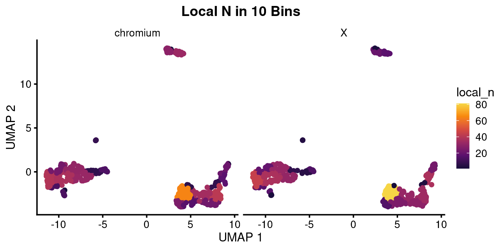
bb_var_umap(vignette_cds,
var = "log_local_n",
nbin = 10,
sample_equally = T,
facet_by = "equipment",
cell_size = 2,
plot_title = "Log Local N in 10 Bins")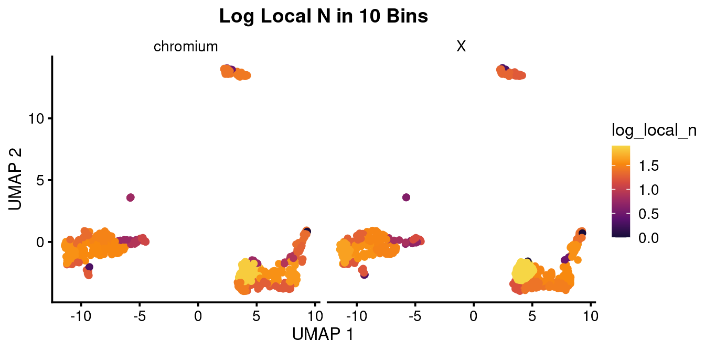
As in this case, usually Density looks better.
Since the concept of distribution between cell states is so important, we have a dedicated function for plotting this.
bb_cluster_representation(cds = vignette_cds,
cluster_var = "leiden_assignment",
class_var = "equipment",
experimental_class = "X",
control_class = "chromium",
return_value = "plot")This function tells you which class of sample is enriched in each cluster. The values are normalized according to the number of total cells captured for that class and presented as log fold change relative to one of the classes (control) which you designate. Significance is determined using Fisher’s exact test. You can test any number of clusters but only two classes using this function. As shown above, this function returns a ggplot which you can modify with any additional ggplot layers you like. If this doesn’t work for you, you can ask the function to return a data table which you can plot manually.
bb_cluster_representation(cds = vignette_cds,
cluster_var = "leiden_assignment",
class_var = "equipment",
experimental_class = "X",
control_class = "chromium",
return_value = "table")
#> # A tibble: 3 × 10
#> # Groups: leiden_assignment [3]
#> leiden_assignment X chromium fold_change_over_con…¹ log2fold_change_over…²
#> <chr> <dbl> <dbl> <dbl> <dbl>
#> 1 T/NK 308. 285. 1.08 0.112
#> 2 DC/Mono 232. 232. 0.997 -0.00501
#> 3 B 43.7 65.5 0.667 -0.583
#> # ℹ abbreviated names: ¹fold_change_over_control, ²log2fold_change_over_control
#> # ℹ 5 more variables: enriched <chr>, n <dbl>, fisher_exact_p <dbl>,
#> # p.signif <chr>, texty <dbl>This table shows the normalized cell count for each class of sample. You can seee that after normalizing for the number of cells captured, there were 64.5 B cells in the chromium sample and 42.6 B cells in the X sample. This barely reaches signficance using the Fisher exact test. If you look at the density and log local N UMAPs above, you can probably appreciate the difference in cell color. I would say there is a subtle difference but in the end it is up to your reader (or reviewer) if this is convincing or not.
In addition to plotting cell metadata variables, we can plot gene expression in UMAP plots.
For example:
bb_gene_umap(vignette_cds,
gene_or_genes = "CD3D")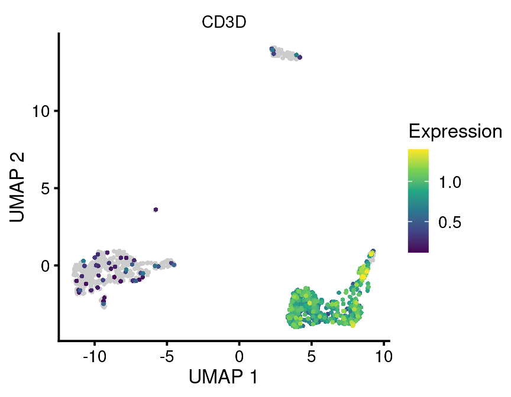
Now a word of caution/advice. I find that these plots are most useful for exploratory analysis and possibly supplemental figures but often not main figures. The reason is that they convey less information per unit area than other plot types, such as gene dotplots. It is often also more difficult to visually distinguish differences between plots. This is related mostly to the problem of overplotting. If you have many cells, often the points will be plotted more or less on top of each other. If you have a gene which is expressed in only a few of these cells, it will be buried underneath all of the non-expressing cells. In order to highlight these rare cells, this function makes the choice to plot all non-expressing cells first on the bottom layer and then plot all of the expressing cells on top. This ensures you can see the rare expressing cells but may lead to overestimation of their number in some cases. So it should be used with caution.
We can also plot multiple individual genes or aggregate gene scores (e.g. modules) using this function:
bb_gene_umap(vignette_cds, gene_or_genes = c("CD19", "CD3D", "CD14"))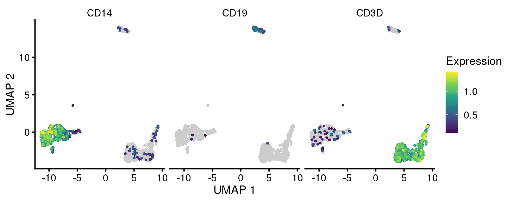
Note that for plotting aggregate genes, the parameter gene_or_genes should be provided with a data frame of two columns with the first column being ensembl cell id and the second being the gene grouping.
agg_genes <-
bb_rowmeta(vignette_cds) %>%
dplyr::select(id, module_labeled) %>%
dplyr::filter(module_labeled == "Module 1")
bb_gene_umap(vignette_cds,
gene_or_genes = agg_genes)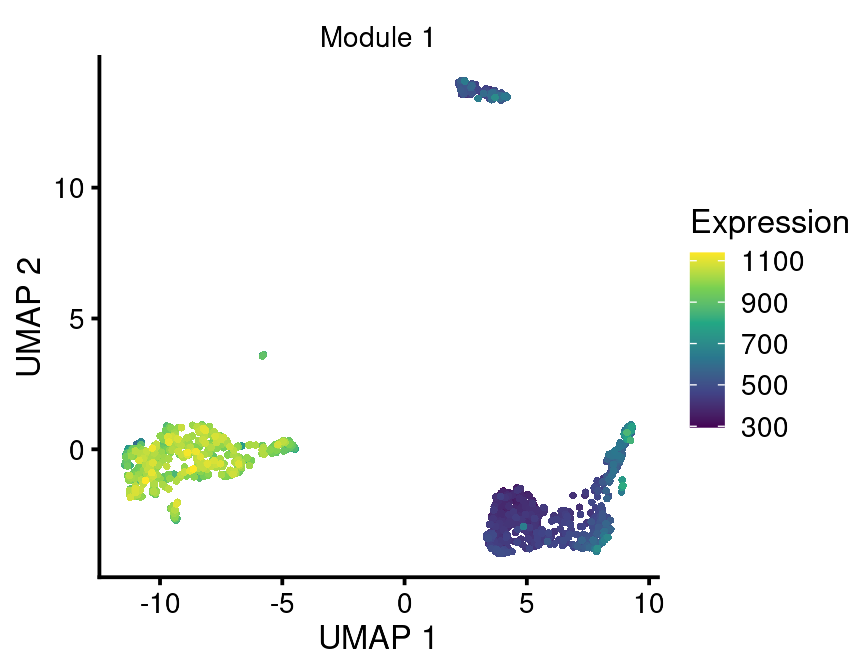
Gene Dotplots
A more information-dense way to plot these data is as a gene dotplot, or “gene bubbles”. This plot is less susceptible to misleading the reader because of overplotting.
bb_genebubbles(vignette_cds,
genes = c("CD3E", "CD14", "CD19"),
cell_grouping = "leiden_assignment")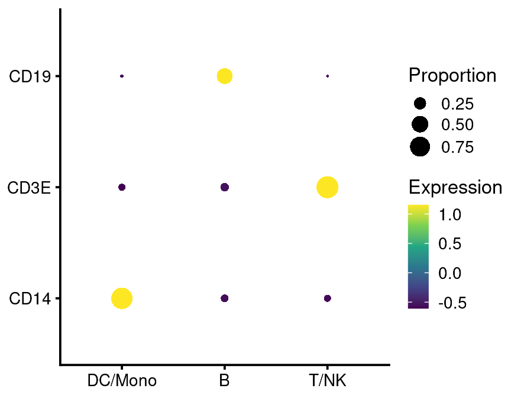
If run with default settings, this will order the genes and cell groups using a biclustering algorithm. This is not apparent on the plot above because of the small number of groups and genes. But you can also specify the order:
bb_genebubbles(vignette_cds,
genes = c("CD3E", "CD14", "CD19"),
cell_grouping = "leiden_assignment",
gene_ordering = c("as_supplied"),
group_ordering = c("as_supplied"))#will be alphabetical or by factor level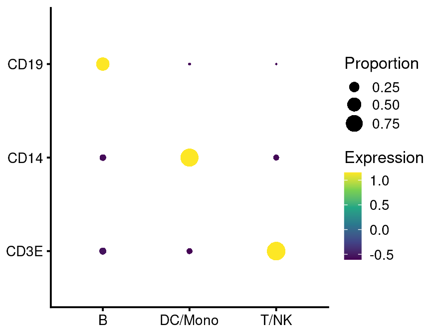
You can generate composite variables like so:
bb_genebubbles(vignette_cds,
genes = c("CD3E", "CD14", "CD19"),
cell_grouping = c("leiden_assignment", "louvain")) +
theme(axis.text.x = element_text(angle = 90, hjust = 1, vjust = 0.5))For more complicated figures, you can return a tibble and make the plot on your own:
bb_genebubbles(vignette_cds,
genes = c("CD3E", "CD14", "CD19"),
cell_grouping = c("leiden_assignment", "louvain"),
return_value = "data")
#> # A tibble: 54 × 13
#> group feature_id expression proportion id gene_short_name data_type module
#> <fct> <chr> <dbl> <dbl> <chr> <fct> <chr> <fct>
#> 1 B_10 ENSG00000… -0.806 0.0909 ENSG… CD14 Gene Exp… 1
#> 2 B_10 ENSG00000… -0.669 0.127 ENSG… CD3E Gene Exp… 2
#> 3 B_10 ENSG00000… 2.38 0.436 ENSG… CD19 Gene Exp… 3
#> 4 B_14 ENSG00000… -0.804 0.0741 ENSG… CD14 Gene Exp… 1
#> 5 B_14 ENSG00000… -0.699 0.0741 ENSG… CD3E Gene Exp… 2
#> 6 B_14 ENSG00000… 3.08 0.463 ENSG… CD19 Gene Exp… 3
#> 7 DC/M… ENSG00000… -0.0876 0.619 ENSG… CD14 Gene Exp… 1
#> 8 DC/M… ENSG00000… -0.764 0.0476 ENSG… CD3E Gene Exp… 2
#> 9 DC/M… ENSG00000… -0.355 0 ENSG… CD19 Gene Exp… 3
#> 10 DC/M… ENSG00000… 1.51 1 ENSG… CD14 Gene Exp… 1
#> # ℹ 44 more rows
#> # ℹ 5 more variables: module_labeled <fct>, supermodule <fct>,
#> # supermodule_labeled <fct>, leiden_assignment <fct>, louvain <fct>Differential Gene Expression
At this point I think our example dataset demonstrates that outside of a small difference in the number of B cells captured, there is a high degree of similarity between the samples run on the chromium and the chromium_X machines. Therefore it is plausible that we can use these as experimental replicates to determine differential gene expression between cell clusters.
This is an important point for your experimental design. Here we are using these sample datasets because they are small and happen to be available. This of course is not how you do experiemnts. You want to design your experiment to include the best possible biological replicates you can find: clutchmates or littermates if possible. If you are working with patient samples you are not going to be able to achieve this so you may want to try to model the potential confounding variables like age, sex, treatments etc. in your analysis. Likewise if your mice are coming from different litters or were processed in different batches you may want to model those confounders. We have functions that can handle this sort of complexity. The most robust of these is called pseudobulk analysis. It extracts the counts from groups of cells, generates an aggregate count profile and performs differential gene expression according to the experimental model you provide. Alternatively you can use a function based on generalized linear models and multivariate regression. The latter function does not require experimental replicates but has some drawbacks in terms of inflated significance values.
Pseudobulk Analysis
Pseudobulk analysis is generally considered more robust than other methods of differential gene expression because it treats biological samples as biological replciates rather than individual cells as biological replicates.
In order to perform this, we aggregate the raw counts from groups of cells that we have to define and then use a bulk RNAseq differential expression program called DESeq2 to generate log fold change and p/q values between the cell groups.
Setting this up requires a little advance thought. You will need to consider that there may be fixed sample-level covariates that could confound interpretation of the comparison you want to perform. For example, let’s say you want to compare gene expression between a heterogeneous cluster of cells from 20 patient samples; 10 patients are responders and 10 are non-responders to therapy. Your goal is to identify a set of genes that are predicted to be differentially expressed based on the response variable (responders/non-responders). However, you may know other things about these patients such as age, sex, tumor histology, genotype etc. that also explain these differences in gene expression or perhaps explain them better than response to therapy. So you have to model these variables if you want to understand this.
If you are working with experimental animal models you should never allow such confounders to enter your experiment. Always use true biological replicates so that you may interpret differential gene expression based on a single experimental variable.
The next important feature to consider is that for your primary comparison (say response to therapy) you must always have biological replicates of some sort. In other words if you want to identify an effect of response on gene expression, you must have a minimum of 2 responders and 2 non-responders.
You will need to come up with a table describing all of the variables you may wish include in your experimental design. The best place to start is with the CDS cell metadata. You will need the unique biological replicate identifier, the variable you wish to compare and any covariates that you wish to include in the design. In the example CDS we are working with, “sample” identifies the biological replicates and “leiden_assignment” identifies the cell groups we wish to compare. There are no other non-redundant sample variables.
vignette_exp_design <-
bb_cellmeta(vignette_cds) %>%
group_by(sample, leiden_assignment) %>%
summarise()
vignette_exp_design
#> # A tibble: 6 × 2
#> # Groups: sample [2]
#> sample leiden_assignment
#> <chr> <fct>
#> 1 chromium_X T/NK
#> 2 chromium_X DC/Mono
#> 3 chromium_X B
#> 4 chromium_controller T/NK
#> 5 chromium_controller DC/Mono
#> 6 chromium_controller BEach row in this table we will call a “pseudosample”. This is because it represents a group of cells from either a biologically distinct sample or cell cluster. For this simple comparison, we are now ready to run the pseudobulk function.
vignette_pseudobulk_res <-
bb_pseudobulk_mf(cds = vignette_cds,
pseudosample_table = vignette_exp_design,
design_formula = "~ leiden_assignment",
result_recipe = c("leiden_assignment", "T/NK", "DC/Mono"))Now explore the result:
# Detailed column headers for the results tables.
vignette_pseudobulk_res$Header
#> [1] "mean of normalized counts for all samples"
#> [2] "log2 fold change (MLE): leiden_assignment T_NK vs DC_Mono"
#> [3] "standard error: leiden_assignment T_NK vs DC_Mono"
#> [4] "Wald statistic: leiden_assignment T_NK vs DC_Mono"
#> [5] "Wald test p-value: leiden_assignment T_NK vs DC_Mono"
#> [6] "BH adjusted p-values"
# Differential expression results. Positive L2FC indicates up in T/NK vs DC/Mono
vignette_pseudobulk_res$Result %>%
dplyr::filter(log2FoldChange > 0) %>%
arrange(padj)
#> # A tibble: 6,867 × 8
#> id gene_short_name baseMean log2FoldChange lfcSE stat pvalue
#> <chr> <chr> <dbl> <dbl> <dbl> <dbl> <dbl>
#> 1 ENSG000000085… IL32 727. 6.08 0.138 44.0 0
#> 2 ENSG000001672… CD3D 418. 5.81 0.166 35.0 1.23e-268
#> 3 ENSG000001149… EEF1B2 2433. 1.81 0.0578 31.4 3.87e-216
#> 4 ENSG000002477… PCED1B-AS1 320. 4.44 0.146 30.4 2.36e-203
#> 5 ENSG000002117… TRBC2 357. 5.67 0.187 30.3 2.66e-201
#> 6 ENSG000002777… TRAC 276. 5.63 0.187 30.2 5.51e-200
#> 7 ENSG000001271… BCL11B 277. 5.97 0.199 30.1 1.13e-198
#> 8 ENSG000001117… LDHB 368. 2.91 0.0982 29.6 2.80e-192
#> 9 ENSG000001988… CD3E 290. 6.02 0.204 29.6 6.28e-192
#> 10 ENSG000002715… CCL5 295. 5.44 0.188 28.8 6.53e-183
#> # ℹ 6,857 more rows
#> # ℹ 1 more variable: padj <dbl>
vignette_pseudobulk_res$Result %>%
dplyr::filter(log2FoldChange < 0) %>%
arrange(padj)
#> # A tibble: 6,967 × 8
#> id gene_short_name baseMean log2FoldChange lfcSE stat pvalue padj
#> <chr> <chr> <dbl> <dbl> <dbl> <dbl> <dbl> <dbl>
#> 1 ENSG000001… CTSS 2502. -5.11 0.0940 -54.3 0 0
#> 2 ENSG000001… S100A9 6297. -5.80 0.0835 -69.5 0 0
#> 3 ENSG000001… S100A8 3384. -5.82 0.115 -50.6 0 0
#> 4 ENSG000000… CD74 3478. -4.23 0.0759 -55.7 0 0
#> 5 ENSG000002… LST1 633. -4.48 0.116 -38.6 0 0
#> 6 ENSG000002… AIF1 1030. -4.36 0.0982 -44.4 0 0
#> 7 ENSG000002… HLA-DRA 3382. -5.48 0.109 -50.2 0 0
#> 8 ENSG000002… HLA-DPA1 1101. -4.83 0.128 -37.7 0 0
#> 9 ENSG000001… PSAP 990. -4.39 0.0970 -45.3 0 0
#> 10 ENSG000000… LYZ 5176. -6.44 0.132 -48.8 0 0
#> # ℹ 6,957 more rowsThese genes look as expected. These tables show pairwise comparisons. Since there were three levels to the “leiden_assignment” variable, we can select 2 of the three to compare in our “result_recipe”. The first one lised will always be the “experimental” value and genes specific to this condition will be positive while the second will be the “reference” value and genes specific to this condition will be negative.
If you do not specify a “result_recipe” the program will revert to default behavior which is to calculate results based on the final variable in the design_formula using the first two values by alphabetical order. This may or may not be what you want, so be aware of this behavior.
This approach of making an experimental design based on the full CDS and then selecting the result recipe you want to produce (technically called “contrast”) is preferred rather than filtering the CDS to include only T/NK and DC/Mono and running with default settings. This is because the results vary somewhat and using the full CDS in this case gives a more complete picture.
However, consider the case (which we will discuss but not demonstrate here) where you have a sample-level variable of interest such as response to therapy and you only want to look at the effect of this variable on gene expression in a subset of cells. In this case it is OK to subset the CDS to include only this subset of cells (say blasts or leukemic cells) and then use a design formula such as “~ age + sex + genotype + response”. This will give you the effect of response only in blast cells, accounting for age, sex and genotype as potential confounders.
Multivariate Regression
This is a type of analysis you would want to use if you do not have biological replicates suitable for the type of comparison you want to make. In a way it considers each cell as a biological replicate which is an arguable assumption many times.
The major practical limitations of this function are that it can consider only a few genes at a time and does not generate a “log fold change” that we would normally expect. Instead it generates an “estimate” which is basically the slope of a regression line with p and q values.
The regression function is based on the generalized linear regression in R and by default uses the negative binomial distribution which is similar to DESeq2 which we ahve already used.
The blaseRtools package has a function that wraps the multivariate regression function from monocle3 and add some minor functionality.
vignette_regression_res <- bb_monocle_regression_better(cds = vignette_cds,
gene_or_genes = c("CD19", "CD3D", "CD14"),
form = "~leiden_assignment")
vignette_regression_res
#> # A tibble: 9 × 8
#> id gene_short_name stratification formula term log2FoldChange p_value
#> <chr> <chr> <chr> <chr> <chr> <dbl> <dbl>
#> 1 ENSG000… CD14 no stratifica… ~leide… leid… 6.59 1.28e-148
#> 2 ENSG000… CD14 no stratifica… ~leide… leid… 0.182 7.07e- 1
#> 3 ENSG000… CD14 no stratifica… ~leide… stat… 0.342 1.41e- 2
#> 4 ENSG000… CD3D no stratifica… ~leide… leid… -5.87 8.89e-237
#> 5 ENSG000… CD3D no stratifica… ~leide… leid… -5.24 4.44e- 49
#> 6 ENSG000… CD3D no stratifica… ~leide… stat… 1.84 3.37e- 46
#> 7 ENSG000… CD19 no stratifica… ~leide… leid… 0.174 6.18e- 1
#> 8 ENSG000… CD19 no stratifica… ~leide… leid… 5.93 3.46e- 9
#> 9 ENSG000… CD19 no stratifica… ~leide… stat… 0.360 4.37e- 3
#> # ℹ 1 more variable: q_value <dbl>If you look at the term column you can see the comparisons being made:
vignette_regression_res$term
#> [1] "leiden_assignmentDC/Mono" "leiden_assignmentB"
#> [3] "stats::offset(log(Size_Factor))" "leiden_assignmentDC/Mono"
#> [5] "leiden_assignmentB" "stats::offset(log(Size_Factor))"
#> [7] "leiden_assignmentDC/Mono" "leiden_assignmentB"
#> [9] "stats::offset(log(Size_Factor))"Here “leiden_assignmentDC/Mono” means that the comparison is DC/Mono vs T/NK cells. You know this because T/NK does not show up in the term column. It was chosen alphabetically as the reference condition. In this case, a positive estimate means that the gene is up in DC/Mono vs T/NK cells.
Conclusion
Using these steps you should be able to go from sequencing data to figures, gene lists and p values for many 10X datasets you come across.
Please contact me by email with questions, corrections or enhancements or post in github if you are so inclined.
bradley.blaser@osumc.edu https://github.com/blaserlab/blaseRtools